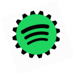

Are you ready to discover new songs?!
About this project
Human Computer Interaction (Team 5)
This project is made in the context of the Fundamentals of Human Computer Interaction course at KU Leuven.
The goal of this project is to create a recommender engine with a User Interface that is constructed according to the principles of HCI.
By using this webapp, you agree that your interaction data generated by this webapp can be used for educational purposes.
Your personal data such as your name, e-mail, playlists, ... will not be collected.
In particular, we use your data to:
- Conduct user studies
- Construct usage metrics
Start here!
© 2019 Copyright:
HCI group 5